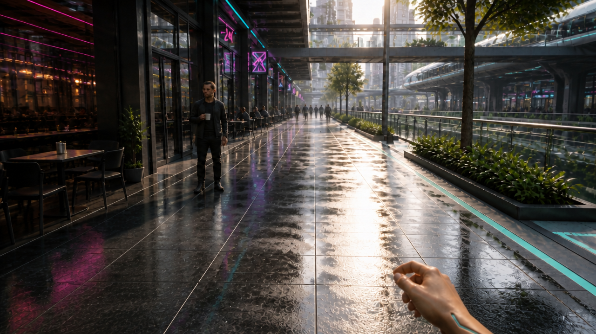

Coffee approach — one visible running hand
Same cyberpunk cafe arcade

Left foreground hand and forearm are fully removed and replaced with coherent reflective pavement. Only Riley's right hand and short forearm remain low at the bottom-right edge, retaining natural skin and thin cyan/chrome details. Farther-ahead patron, clear approach, cafe/transit geography and lighting are visually consistent with v04.
What still needs testing
- A still suggests a running arm-swing phase but does not establish actual running cadence.
- Previous cup-hand placement and background table-cup issues remain; this targeted edit did not address them.
- No falling-cup or camera-orbit motion was generated or approved.